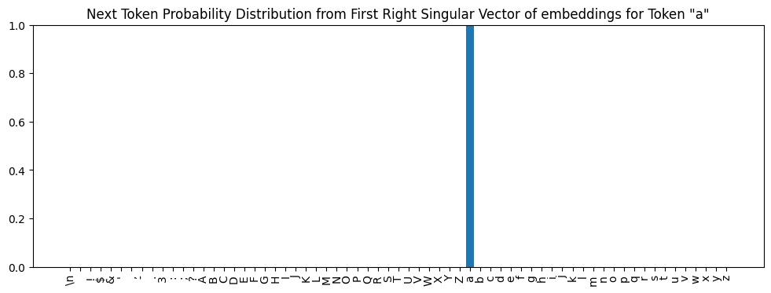

The original paper, as well every transformer tutorial I found, focuses primarily on multi-head self-attention, the mechanism by which transformers learn multiple relationships between tokens without relying on recurrences or convolution. But none of the papers or tutorials I encountered give a satisfying explanation of what happens after attention: how exactly do the results of the attention computation turn into accurate predictions for the next token?
I thought I could run a few example prompts through the small but working transformer I’d trained, examine the internal states, and figure this out. What I thought would be a quick investigation turned out to be a 6-month deep dive, but yielded some results I think are worth sharing. Specifically, I have a working theory that explains how the transformer produces its predictions and some empirical evidence that suggests this explanation is at least plausible.
For those readers familiar with transformers and eager for the punchline, here it is: Each transformer block (containing a multi-head self-attention layer and feed-forward network) learns weights that associate a given prompt with a class of strings found in the training corpus. The distribution of tokens that follow those strings in the training corpus is, approximately, what the block outputs as its predictions for the next token. Each block may associate the same prompt with a different class of training corpus strings, resulting in a different distribution of next tokens and thus different predictions. The final transformer output is a linear combination of each block’s predictions.
I implemented imperative code that does what I’m proposing the transformer is doing. It produces outputs very similar to the transformer, which I’ll review in detail in a later section.
In this post, I’m going to briefly introduce the model and training data, demo some evidence for my proposed explanation, give a detailed walkthrough of the imperative code implementation of it, and present the supporting evidence I have for my theory. I’ve tried to keep the main narrative succinct, with links to relevant technical details and justifications in the appendices or other notebooks in the repo.
This project is my first foray into this type of open-ended ML research. I’m sure I have made errors or omissions that would be obvious to more experienced researchers. I welcome any feedback on this work at shyam.pather at gmail dot com.
I typed in the code by copying what I saw on the screen as I watched the video. For things that weren’t clear onscreen, I referenced the GitHub repo for the video and the nanoGPT repo. After getting it working, I made only minor changes to make it work with the rest of the code in/structure of my repository, resulting in this implementation. In summary: the core language model is Andrej Karpathy’s work, not mine. The analysis and all the supporting code behind it are my original contributions. I’ll acknowledge and cite influential papers, posts, tutorials, and other resources in the relevant places.
class ArchDiagram(Scene):def construct(self):# Instantiate the model and tokenizer, which we'll use to# embed prompts. device ='cuda'if torch.cuda.is_available() else'cpu' ts = TinyShakespeareDataSet(cache_file=environment.code_root /'nbs/artifacts/input.txt') m, tokenizer = create_model_and_tokenizer( saved_model_filename=environment.code_root /'nbs/artifacts/shakespeare-20231112.pt', dataset=ts, device=device, ) encoding_helpers = EncodingHelpers(tokenizer, device) prompt ='ROMEO:' tokens = MobjectTable( [[Text(f'{t}', font='Arial') for t in tokenizer.encode(prompt)]], include_outer_lines=True, ).scale(0.25) tokens = VGroup( Text('Input Tokens', font='Arial').scale(0.4).next_to(tokens, UP, buff=0.1), tokens, ) token_emb = m.token_embedding_table(encoding_helpers.tokenize_string(prompt)) token_emb = MobjectTable( [[Text(f'{x:.1f}', font='Arial') for x in token_emb[0, :, row]] for row inrange(0, 2)]+ [[Text('...', font='Arial').rotate(PI/2) for _ in prompt]]+ [ [Text(f'{x:.1f}', font='Arial') for x in token_emb[0, :, row]]for row inrange(n_embed -2, n_embed) ], include_outer_lines=True, ).scale(0.25) pos_emb = m.position_embedding_table( torch.arange(0, len(prompt), device=device) ) pos_emb = MobjectTable( [[Text(f'{x:.1f}', font='Arial') for x in pos_emb[:, row]] for row inrange(0, 2)]+ [[Text('...', font='Arial').rotate(PI/2) for _ in prompt]]+ [ [Text(f'{x:.1f}', font='Arial') for x in pos_emb[:, row]]for row inrange(n_embed -2, n_embed) ], include_outer_lines=True, ).scale(0.25) embs = VGroup( token_emb, pos_emb, ).arrange(RIGHT, buff=2) embs = VGroup( tokens, embs, ).arrange(DOWN, buff=0.5) emb_labels = VGroup( Text('Token Embeddings', font='Arial') .scale(0.4) .next_to(token_emb, DOWN, buff=0.1) .align_to(token_emb, LEFT), Text('Position Embeddings', font='Arial') .scale(0.4) .next_to(pos_emb, DOWN, buff=0.1) .align_to(pos_emb, RIGHT), ) blocks1_2 = [Rectangle(height=0.4, width=3) for _ inrange(2)] vert_ellipsis = VGroup(*[Circle(radius=0.025, color=WHITE) for _ inrange(3)], ).arrange(direction=DOWN, buff=0.1) block6 = Rectangle(height=0.4, width=3) blocks = VGroup(*blocks1_2, vert_ellipsis, block6, ).arrange(DOWN, buff=0.1) empty_rect = Rectangle(height=0.25, width=3, color=BLACK) out_blocks = [Rectangle(height=0.4, width=3) for _ inrange(3)] arch = VGroup( embs, emb_labels, blocks, empty_rect,*out_blocks, empty_rect.copy() ).arrange(DOWN, buff=0.1)self.add(arch)# Add annotations# Lines and arrows between tokens and embedding tables left_line = Line(start=tokens[1].get_left(), end=(tokens[1].get_left() * [0., 1., 0.]) + (token_emb.get_center() * [1., 0., 0.]))self.add(left_line) left_arrow_down = Arrow(max_tip_length_to_length_ratio=0.15) left_arrow_down.put_start_and_end_on( start=left_line.get_left(), end=left_line.get_left() * [1., 0., 0.] + token_emb.get_top() * [0., 1., 0.], )self.add(left_arrow_down) right_line = Line(start=tokens[1].get_right(), end=(tokens[1].get_right() * [0., 1., 0.]) + (pos_emb.get_center() * [1., 0., 0.]))self.add(right_line) right_arrow_down = Arrow(max_tip_length_to_length_ratio=0.15) right_arrow_down.put_start_and_end_on( start=right_line.get_right(), end=right_line.get_right() * [1., 0., 0.] + pos_emb.get_top() * [0., 1., 0.], )self.add(right_arrow_down)# Circle with the plus between the embedding tables circle = ( Circle(radius=0.4, color=WHITE) .move_to((token_emb.get_right() + pos_emb.get_left()) /2) )self.add(circle) plus = Text('+', font='Arial').move_to(circle.get_center())self.add(plus)# Arrows from embedding tables to circled plus right_arrow = Arrow(max_tip_length_to_length_ratio=0.15) right_arrow.put_start_and_end_on( start=token_emb.get_right(), end=circle.get_left() )self.add(right_arrow) left_arrow = Arrow(max_tip_length_to_length_ratio=0.15) left_arrow.put_start_and_end_on( start=pos_emb.get_left(), end=circle.get_right() )self.add(left_arrow)# Arrow down to the first block down_arrow = Arrow(max_tip_length_to_length_ratio=0.15) down_arrow.put_start_and_end_on( start=circle.get_bottom(), end=blocks1_2[0].get_top(), )self.add(down_arrow)# Block labels blocks1_2_labels = [Text(f'Block {b+1}', font='Arial').move_to(blocks1_2[b].get_center()).scale(0.4) for b inrange(2)]self.add(*blocks1_2_labels) block6_label = Text('Block 6', font='Arial').move_to(block6.get_center()).scale(0.4)self.add(block6_label)# Output blocks labels labels = ['Layer Norm', 'Linear', 'Softmax'] out_block_labels = [Text(f'{l}', font='Arial').move_to(out_blocks[b].get_center()).scale(0.4) for b, l inenumerate(labels)]self.add(*out_block_labels)# Arrow between last block and output blocks out_block_arrow = Arrow(max_tip_length_to_length_ratio=0.08) out_block_arrow.put_start_and_end_on( start=block6.get_bottom(), end=out_blocks[0].get_top(), )self.add(out_block_arrow)# Text at the bottom out_prob_text = Text('Output Probabilities', font='Arial').scale(0.4).next_to(out_blocks[-1], DOWN, buff=0.5)self.add(out_prob_text)# Arrow between softmax and output probs out_prob_arrow = Arrow(max_tip_length_to_length_ratio=0.08) out_prob_arrow.put_start_and_end_on( start=out_blocks[-1].get_bottom(), end=out_prob_text.get_top(), )self.add(out_prob_arrow)
It’s trained on the TinyShakespeare data set which contains 40,000 lines of Shakespeare’s plays. After about an hour of training on an RTX 4000 GPU, it is able to produce reasonable-looking faux Shakespeare.
Given a prompt, the model predicts tokens that it thinks should follow. Let’s look at an example: starting with the prompt, ROMEO:, and sampling 500 tokens from the model’s predictions, we get:
Code to spin up model and generate example output from prompt, ‘ROMEO:’
ROMEO:
If thou wilt triumphant be virtue, and since from any
bold virtue that is made a bawd of earth, then the
duke desires of patience and perish:
take up the other husband, dislike his tent
back.
First Citizen:
Ourself goes, go back: you have no consul, but the disguised gods.
Second Citizen:
We choose him in the world, he did runk itself.
First Citizen:
Sir, I am I a man changed him and thriving, I have heard the
king.
CORIOLANUS:
Consider him!
AUFIDIUS:
Most gracious irice, and you must danc
It’s not Shakespeare but structurally, it’s plausible Shakespeare. It looks like the script for a play, the language sounds archaic, the character names/titles come from real Shakespeare plays. Most of the words are English words. Punctuation and capitalization are mostly sensible. Clearly, none of the text actually makes sense, but still, it’s not bad for an hour of training.
The tokens in the model are characters, not words. Given a prompt, the model predicts a probability distribution for the next character. For example, given the prompt 'my most gr, the model predicts these probabilities for the next token:
Code to display probabilities for next token after my most gr
prompt ='my most gr'tokens = encoding_helpers.tokenize_string(prompt)logits, _ = m(tokens)logits = LogitsWrapper(logits.detach(), tokenizer)for token, prob in logits.topk_tokens(k=10)[0][-1]:print(f'{repr(token)}{prob:.3f}')
Appendix I provides a few more details about the model. Beyond that, if you want to know more, the code and Andrej’s video are the best resources.
Transformer Block Structure
Each of the 6 blocks in the architecture diagram above contains two significant sub-components: a multi-head self-attention layer and a feed-forward network, wired together via a mix of direct and residual connections as follows:
Drawing code for block internals architecture diagram
class BlockArchDiagram(Scene):def construct(self): input_emb = Rectangle(height=0.4, width=3) input_emb_label = ( Text('Block Input', font='Arial').move_to(input_emb.get_center()).scale(0.4) ) input_emb = VGroup(input_emb, input_emb_label) ln1 = Rectangle(height=0.4, width=3) ln1_label = Text('Layer Norm', font='Arial').move_to(ln1.get_center()).scale(0.4) ln1 = VGroup(ln1, ln1_label) sa = Rectangle(height=0.6, width=3.5) sa_label = Text('Multi-Head Self-Attention', font='Arial').move_to(sa.get_center()).scale(0.4) sa = VGroup(sa, sa_label) stack1 = VGroup(ln1, sa).arrange(DOWN, buff=0.4) first_plus =self.circled_plus(radius=0.3) ln2 = Rectangle(height=0.4, width=3) ln2_label = Text('Layer Norm', font='Arial').move_to(ln2.get_center()).scale(0.4) ln2 = VGroup(ln2, ln2_label) ffwd = Rectangle(height=0.6, width=3.5) ffwd_label = Text('Feed Forward', font='Arial').move_to(ffwd.get_center()).scale(0.4) ffwd = VGroup(ffwd, ffwd_label) stack2 = VGroup(ln2, ffwd).arrange(DOWN, buff=0.4) empty_rect = Rectangle(height=0.2, width=3, color=BLACK) second_plus =self.circled_plus(radius=0.3)self.add( VGroup( empty_rect, input_emb, stack1, first_plus, empty_rect.copy(), stack2, second_plus, empty_rect.copy(), ).arrange(DOWN, buff=0.5) ) stack1.shift(LEFT *2) stack2.shift(LEFT *2)# Add annotations arrow_stroke_width =2.0# Arrow from input emb to ln1self.add(self.arrow_via_points( [ input_emb.get_left(), ln1.get_top() * [1.0, 0.0, 0.0]+ input_emb.get_left() * [0.0, 1.0, 0.0], ln1.get_top(), ], stroke_width=arrow_stroke_width, ) )# Arrow from ln1 to saself.add(self.arrow_via_points( [ ln1.get_bottom(), sa.get_top(), ], stroke_width=2* arrow_stroke_width, ) )# Arrow from sa to first plusself.add(self.arrow_via_points( [ sa.get_bottom(), sa.get_bottom() * [1.0, 0.0, 0.0]+ first_plus.get_left() * [0.0, 1.0, 0.0], first_plus.get_left(), ], stroke_width=arrow_stroke_width, ) )# Arrow from input emb to circled plusself.add(self.arrow_via_points( [ input_emb.get_right(), ln1.get_top() * [-1.0, 0.0, 0.0]+ input_emb.get_right() * [0.0, 1.0, 0.0], ln1.get_top() * [-1.0, 0.0, 0.0]+ first_plus.get_right() * [0.0, 1.0, 0.0], first_plus.get_right(), ], stroke_width=arrow_stroke_width, ) )# Arrow from first plus to ln2self.add(self.arrow_via_points( [ first_plus.get_bottom(), first_plus.get_bottom()+ (ln2.get_top() - first_plus.get_bottom()) * [0.0, 0.5, 0.0], ln2.get_top()- (ln2.get_top() - first_plus.get_bottom()) * [0.0, 0.5, 0.0], ln2.get_top(), ], stroke_width=arrow_stroke_width, ) )# Arrow from ln2 to ffwd ln2_ffwd_arrow = Arrow(max_tip_length_to_length_ratio=0.08) ln2_ffwd_arrow.put_start_and_end_on( start=ln2.get_bottom(), end=ffwd.get_top(), )self.add(ln2_ffwd_arrow)# Arrow from ffwd to second plusself.add(self.arrow_via_points( [ ffwd.get_bottom(), ffwd.get_bottom() * [1.0, 0.0, 0.0]+ second_plus.get_left() * [0.0, 1.0, 0.0], second_plus.get_left(), ], stroke_width=arrow_stroke_width, ) )# Arrow from first plus to second plusself.add(self.arrow_via_points( [ first_plus.get_bottom()+ (ln2.get_top() - first_plus.get_bottom()) * [0.0, 0.5, 0.0], second_plus.get_top(), ], stroke_width=2* arrow_stroke_width, ) )# Arrow from second plus to outputself.add(self.arrow_via_points( [ second_plus.get_bottom(), second_plus.get_bottom() + DOWN *0.4, ], stroke_width=2* arrow_stroke_width, ) )def arrow_via_points(self, points: Iterable[np.ndarray], stroke_width: float=2.0):assert (len(points) >=2 ), 'Must provide at least two points to draw an arrow between' lines = VGroup()iflen(points) >2:# Draw lines up to the the second to last point lines.add(*[ Line(start=points[i], end=points[i +1], stroke_width=stroke_width)for i inrange(len(points) -1) ] )# Draw the final arrow arrow_length = np.linalg.norm(points[-1] - points[-2]) arrow = Arrow( max_tip_length_to_length_ratio=0.08, max_stroke_width_to_length_ratio=stroke_width / arrow_length, ) arrow.put_start_and_end_on( start=points[-2], end=points[-1], ) arrow.set_stroke( width=stroke_width /2 ) # I don't know why but to get the width right I need to divide by 2 lines.add(arrow)return linesdef circled_plus(self, radius: float=0.4): circle = Circle(radius=radius, color=WHITE) plus = Text('+', font='Arial').move_to(circle.get_center())return VGroup(circle, plus)
The Block module implements this wiring in PyTorch:
class Block(nn.Module):"""One transformer block"""def__init__(self, n_embed, n_head):super().__init__() head_size = n_embed // n_headself.sa = MultiHeadAttention(n_head, head_size)self.ffwd = FeedForward(n_embed)self.ln1 = nn.LayerNorm(n_embed)self.ln2 = nn.LayerNorm(n_embed)def forward(self, x): x = x +self.sa(self.ln1(x)) # The `x +` part is a skip connection x = x +self.ffwd(self.ln2(x)) # The `x +` part is a skip connectionreturn x
While many words have been written and spoken about multi-head attention, comparatively little has been said about the feed-forward network because, it seems, comparatively little is known:
I started this investigation wondering what comes after attention. Literally, the feed-forward network does. In the transformer I studied, across all 6 blocks, the feed-forward networks comprise over 65% of the total trainable parameters, so they must play some important role.
As I’ll show later, it turns out that the output of the feed-forward network is the primary factor that determines how a block transforms its input into its output.
Demo: My Proposal In Action
In this section, I’m going to show an example that illustrates what I’m proposing the transformer is doing. In the next section, I’ll go into detail about how this is implemented.
Imagine we did the following:
Ran the prompt, 'And only l', through the model and extracted the output value of the feed-forward network in the first transformer block.
Went back to the training corpus, found all substrings of the same length as our prompt (10-characters), ran all of them through the model, and filtered out just the ones whose feed-forward network outputs in the first block have a cosine similarity of 0.95 or greater when compared to that of the prompt, 'And only l'.
We’d come up with this set of strings:
Helper function to print results in a table
def text_table( headers: Iterable[str], data_columns: Sequence[Sequence[str]], col_widths: Sequence[int]):assertlen(headers) ==0orlen(headers) ==len( data_columns ), "Must have either zero headers or the same number as data columns"assertlen(data_columns) ==len(col_widths), "Must have same number of column widths as data columns"iflen(headers) >0: output ="".join([f"{header:{col_widths[i]}}"for i, header inenumerate(headers)]) +"\n" header_underlines = ["-"*len(header) for header in headers] output += ("".join( [f"{header_underline:{col_widths[i]}}"for i, header_underline inenumerate(header_underlines) ] )+"\n" )else: output ="" max_len =max([len(col) for col in data_columns])for i inrange(max_len): items = [ data_column[i] if i <len(data_column) else" "for data_column in data_columns ] output +="".join([f"{item:{col_widths[i]}}"for i, item inenumerate(items)]) +"\n"return output
Code to generate similar strings (will be explained later)
# Get all the unique substrings in the textstrings10 = all_unique_substrings(text=ts.text, substring_length=10)# Set up to look at prefilteringprefiltered_threshold=0.7prefiltered_results_folder = environment.data_root /'cosine_sim_results/large_files/slen10'/f'prefiltered_{prefiltered_threshold}'def prefiltered_filename(block_idx: int, q_idx: int) -> Path:return prefiltered_results_folder /f'cosine_sim_ffwd_out_{q_idx:05d}_{block_idx:02d}.pt'def load_prefiltered_data(block_idx: int, q_idx: int):return torch.load(prefiltered_filename(block_idx, q_idx))block_idx =0similarity_threshold=0.95q_idx =57# Query index for `And only l`similar_indices = filter_on_prefiltered_results( load_prefiltered=lambda q_idx: load_prefiltered_data(block_idx, q_idx), q_idx_start=q_idx, q_idx_end=q_idx+1, filter_fn=lambda values: values > similarity_threshold)similar_strings = [ [strings10[i] for i in indices]for indices in similar_indices]data_columns=[ [repr(s) for s in similar_strings[0][i : i +20]] for i inrange(0, len(similar_strings[0]), 20)]print(text_table( headers=[], data_columns=data_columns, col_widths=[16for _ in data_columns]))
'hat only l' 's sickly l' ' as\nthey l' 'r kingly l' 're; they l'
'eby they l' 'ar, they l' 'im, only l' 'ling any l' 'life may l'
'nobility l' 'e\nBy any l' ' as they l' ', if any l' ' hastily l'
'tly they l' ' ghastly l' '\nMy only l' 'For many l' 'r in any l'
' till my l' 'all they l' 'hen they l' 'at Henry l' 'oolishly l'
'er:\nThey l' 'may they l' 'or stony l' 'ur Henry l' 'l gladly l'
'yet they l' 'y;\nDelay l' 'e, on my l' 'or Henry l' 'I dearly l'
' if they l' ' she may l' 't\nfairly l' 'ould say l' 'd all my l'
'her they l' ' Stanley l' ' and may l' 'uld they l' 'u all my l'
'friendly l' 'h gently l' 'e deadly l' 'f all my l' 'n all my l'
'Ere they l' 'steel my l' ' tell my l' 'e kingly l' 'learn my l'
'd he say l' 't basely l' 'Thursday l' 'iciously l' " 'if any l"
' as many l' 'hy glory l' 'not very l' 'a goodly l' 'e surely l'
'quiously l' ', fairly l' 'lord! my l' 'entle my l' ', he may l'
'our holy l' ' worldly l' ' my only l' ' all, my l'
'ul, they l' 'o lately l' 's in any l' ' no lady l'
'ter many l' 'Our holy l' 't vainly l' 'e\nA lady l'
' you may l' 'y greedy l' 'untimely l' 'directly l'
'er on my l' 'e wistly l' 'ng Henry l' 'And only l'
's kindly l' 'KE:\nThey l' ' of many l' 'o, on my l'
There’s a clear pattern across these: they all end in y l and several of them end in ly l. Similarity in the space of feed-forward network outputs seems to correspond to human-interpretable patterns.
Next, imagine we went back to the training corpus, found each of these strings and built a distribution of all the characters that came after them. We’d find, for example:
'hat only l' is followed by i (“That only like a gulf it did remain”)
'l gladly l' is followed by e (“I’ll gladly learn.”)
'n all my l' is followed by both a and i (“In all my lands and leases whatsoever” and “never saw you before in all my life”)
Doing this for the complete set of 94 strings, we’d end up with this distribution:
Helper function to plot probability distribution for tokens
Code to produce distribution from tokens that follow similar strings
next_token_map10 = build_next_token_map( text=ts.text, prefix_len=10, vocab_size=tokenizer.vocab_size, stoi=tokenizer.stoi)total_freq_distribution = torch.stack([ next_token_map10[string] for string in similar_strings[0]]).sum(dim=0)prob_distribution = total_freq_distribution / total_freq_distribution.sum()plot_prob_distribution_for_tokens(prob_distribution, title='Normalized frequency distribution from block 0 similar strings')
The various tokens in our model’s vocabulary appear on the x-axis and the normalized frequency of occurrence on the y-axis. This plot shows that i was the most frequent, then o, then a, and finally, e.
Now let’s look at the final output of the transformer as a whole when given And only l as a prompt:
Code to produce model predictions
prompt ='And only l'tokens = encoding_helpers.tokenize_string(prompt)logits, _ = m(tokens)logits = LogitsWrapper(logits.detach(), tokenizer)logits.plot_probs(title='Probability distribution from model')
This is a probability distribution representing the model’s predictions for the next token. Notice that it’s strikingly similar to the normalized frequency distribution shown in the previous plot!
We can quantify how similar they are. Hellinger distance is a measure of overlap between probability distributions. Given distributions \(P\) and \(Q\), the Hellinger distance between them is:
Hellinger distance of 0 means the two distributions are identical and 1 means they have no overlap.
The Hellinger distance between the two distributions above - the distribution formed from the tokens that follow the strings with similar feed-forward network outputs and the distribution the model predicts - is 0.07: very nearly identical.
For the sake of keeping the demo brief, I chose an example where the first block’s similar strings alone are enough to produce a distribution that closely matches the final output of the transformer. Typically, we’d need to need to do the same exercise - finding the strings in the training corpus that produce similar feed-forward network outputs to the prompt and building a distribution from the tokens that succeed them - for all 6 transformer blocks, and then calculate a weighted sum of the resulting distributions in order to get a good match. We’ll do that in the next section and see that across a sample of 20,000 prompts, the average Hellinger distance between distributions computed this way and the corresponding transformer output was just 0.17.
This small average Hellinger distances suggests the results produced by this approach are a good approximation for the transformer’s outputs. In addition, as I’ll explain in the interpretation section, I think the approach itself is a reasonable approximation of what the transformer is actually doing.
Implementation: Approximating the Transformer Output with Feed-forward Network Outputs
In this section, I’m going to walk through in some detail and with code, the exact procedure I used to approximate the transformer’s output using strings that produced similar feed-forward network outputs. If you’re not interested in the implementation, skip this section and proceed to the evaluation section.
To recap, this is the procedure to compute the approximation:
Run a prompt through the model and save the feed-forward network outputs for each block.
For each block:
Find the strings in the training corpus that produce the most similar feed-forward network outputs to the prompt for that block.
For each string found, build a frequency distribution of the tokens that come after it in the training corpus.
Sum the frequency distributions for all strings found for the current block.
Compute a weighted sum of the frequency distributions for each block computed in the previous step.
Normalize the weighted sum to get a probability distribution.
Procedure Setup
The first step of the procedure - running a prompt through the model and saving the feed-forward network outputs for each block - is straightforward to accomplish with some basic PyTorch hooks. But the first part of step two - finding the strings in the training corpus that produce similar feed-forward network outputs - requires some additional machinery to do efficiently.
I did all the analysis with length 10 strings for compute and storage efficiency (but I also observed that the results hold for both shorter and longer strings). The 1,115,394-character long training corpus contains 858,923 unique, length 10 substrings. Each feed-forward network output is a 384-dimensional vector of float32 values and the model produces 6 of them (one for each block). Comparing the 6 384-dimensional feed-forward outputs for any prompt to 6 * 858,923 = 5,153,538 feed-forward outputs from all the other strings takes a long time. To able to work with this data, I had to pre-compute things. I built the following pipeline:
I chose 20,000 length 10 strings from the training corpus at random to use as prompts in this experiment.
Overnight, I ran a process to compute the cosine similarity between the feed-forward network outputs the model produced for the 20,000 prompts and those it produced for the 858,923 unique length 10 substrings of the training corpus. I did this in batches and saved the results to disk.
Even after pre-computing the cosine similarity results, searching through all of them to find the closest matches took a long time. Experiments showed matches of interest never had a cosine similarity below 0.7, so I ran another step to pre-filter the results of step 2 to just those entries with cosine similarity >= 0.7. This greatly reduced the number of entries to search through.
The code for this pre-computation and pre-filtering is too much to include in this post, but the implementation is available in the cosine-sims experiment notebook.
Procedure Walkthrough
In this section, we’ll build up the code step by step and run it on one prompt at a time and for just one block. Over the following sections, we’ll extend it to additional blocks, run it across a large number of prompts, and examine the results.
First, we need to grab 20,000 length 10 strings from the training corpus to use as prompts:
# Get all the unique substrings in the textstrings10 = all_unique_substrings(text=ts.text, substring_length=10)n_prompts =20000torch.manual_seed(1337)indices = torch.randperm(len(strings10))[:n_prompts]prompts = [strings10[i.item()] for i in indices]
As described in the Procedure Setup section, I previously ran all these strings through the model, grabbed the feed-forward network outputs for each block, and pre-computed the cosine similarities to all the unique length 10 substrings in the training corpus. And then I pre-filtered the results to just those with cosine similarity >= 0.7.
The the cosine-sims experiment notebook that implements all this also exports a helper function, filter_on_prefiltered_results(), that we can use to find the most similar strings to a given prompt by searching over the pre-filtered results.
If you’re curious about how this works, check out the notebook. It’s pretty straightforward and the unit test provides a simple example that illustrates the shape of the inputs and outputs.
To use filter_on_prefiltered_results(), we just need to tell it how to find the prefiltered files:
Note on the use of q_idx here and in the rest of the code: q_idx refers to “query index”. The job that pre-computes all the cosine similarities takes a set of “queries” or values to compare to. These queries are the feed-forward network outputs the model produces for the prompts. There is a 1:1 correspondence between queries and prompts and so I’ve used the terms interchangeably in the code.
To start, we’ll use the same prompt - 'And only l' - we used in the earlier demo. It happens to be the prompt at index 57:
prompts[57]
'And only l'
We’ll find the strings whose feed-forward network outputs in block 0 had a cosine similarity of 0.95 or greater when compared to the block 0 feed forward network output of the prompt.
block_idx =0similarity_threshold=0.95q_idx =57similar_indices = filter_on_prefiltered_results( load_prefiltered=lambda q_idx: load_prefiltered_data(block_idx, q_idx), q_idx_start=q_idx, q_idx_end=q_idx+1, filter_fn=lambda values: values > similarity_threshold)similar_strings = [ [strings10[i] for i in indices]for indices in similar_indices]len(similar_strings[0])
94
This produced the 94 similar strings we saw in the demo. We can print them again to be sure:
print(f"Original string: {repr(prompts[q_idx])}")print("Similar strings: \n")data_columns=[ [repr(s) for s in similar_strings[0][i : i +20]] for i inrange(0, len(similar_strings[0]), 20)]print(text_table( headers=[], data_columns=data_columns, col_widths=[18for _ in data_columns]))
Original string: 'And only l'
Similar strings:
'hat only l' 's sickly l' ' as\nthey l' 'r kingly l' 're; they l'
'eby they l' 'ar, they l' 'im, only l' 'ling any l' 'life may l'
'nobility l' 'e\nBy any l' ' as they l' ', if any l' ' hastily l'
'tly they l' ' ghastly l' '\nMy only l' 'For many l' 'r in any l'
' till my l' 'all they l' 'hen they l' 'at Henry l' 'oolishly l'
'er:\nThey l' 'may they l' 'or stony l' 'ur Henry l' 'l gladly l'
'yet they l' 'y;\nDelay l' 'e, on my l' 'or Henry l' 'I dearly l'
' if they l' ' she may l' 't\nfairly l' 'ould say l' 'd all my l'
'her they l' ' Stanley l' ' and may l' 'uld they l' 'u all my l'
'friendly l' 'h gently l' 'e deadly l' 'f all my l' 'n all my l'
'Ere they l' 'steel my l' ' tell my l' 'e kingly l' 'learn my l'
'd he say l' 't basely l' 'Thursday l' 'iciously l' " 'if any l"
' as many l' 'hy glory l' 'not very l' 'a goodly l' 'e surely l'
'quiously l' ', fairly l' 'lord! my l' 'entle my l' ', he may l'
'our holy l' ' worldly l' ' my only l' ' all, my l'
'ul, they l' 'o lately l' 's in any l' ' no lady l'
'ter many l' 'Our holy l' 't vainly l' 'e\nA lady l'
' you may l' 'y greedy l' 'untimely l' 'directly l'
'er on my l' 'e wistly l' 'ng Henry l' 'And only l'
's kindly l' 'KE:\nThey l' ' of many l' 'o, on my l'
Next, we’ll need to build a frequency distribution for the tokens that came after these strings in the text. To make this easy and efficient (we’ll eventually be doing many times), we can pre-compute the next token frequency distributions for all the unique length 10 substrings in the training corpus. The helper function build_next_token_map(), implemented in the text-analysis module, does this.
The return value stored in next_token_map10 is a dictionary that maps each unique length 10 substring in the training corpus to a frequency distribution of the tokens that come after it. Conceptually, it looks something like this:
In reality, the values are actually tensors of shape (vocab_size,) where vocab_size is the number of unique tokens the vocabulary (65, in our case). The item at index i in the tensor is the count of occurrences of the ith token after the string in that entry’s key. So it looks more like:
Next, we need to sum the frequency distributions for all the strings we found to have similar feed-forward network outputs to our prompt. Because next_token_map10 stores the individual frequency distributions as tensors, this is easy to accomplish:
total_freq_distribution = torch.stack([ next_token_map10[string] for string in similar_strings[0]]).sum(dim=0)
We stack up the distributions for each similar string into a single tensor and then sum across all of them. We can now turn this into a probability distribution by dividing each entry by the sum of all the entries:
plot_prob_distribution_for_tokens(prob_distribution, title='Probability distribution using only block 0 similar strings')
It’s the same distribution we saw in the demo.
Now let’s code the comparison to the model output:
tokens = encoding_helpers.tokenize_string(prompts[q_idx])logits, _ = m(tokens)logits = LogitsWrapper(logits.detach(), tokenizer)logits.plot_probs(title='Probability distribution from model')
Again, the two distributions look very similar, and in this example, the approximation uses only values from the first block. To better compare them, we can look at the distributions in text form:
Helper function to print comparison of distributions as a table
By combining the next token frequency distributions of the similar strings from just the first layer of the model, we are able to pretty closely approximate the output of the transformer. Of course, I chose an example that works particularly well.
Here’s an example where the frequency distribution from just the first layer doesn’t work well:
q_idx=40prompts[q_idx]
'hing tremb'
Using the same method, we can identify 57 strings from the training corpus that produce similar feed-forward network outputs to the prompt:
block_idx =0similarity_threshold=0.95similar_indices = filter_on_prefiltered_results( load_prefiltered=lambda q_idx: load_prefiltered_data(block_idx, q_idx), q_idx_start=q_idx, q_idx_end=q_idx+1, filter_fn=lambda values: values > similarity_threshold)similar_strings = [ [strings10[i] for i in indices]for indices in similar_indices]len(similar_strings[0])
57
We can look up, sum, and normalize the frequency distributions of tokens that follow these strings in the training corpus, and compare the result to the model outputs, as we did before:
Unlike the previous example, these distributions are quite different. The top 3 tokens are the same in each, but they’re in the wrong order and their probabilities are far apart. These differences contribute to a large Hellinger distance:
For the prompt, 'hing tremb', just using the values from the first block results in a poor approximation of the transformer’s output. We’ll soon add the contributions from other blocks and when we do, we’ll get the Hellinger distance between the approximation and the real transformer output for this prompt down from 0.63 to just 0.02.
Similarity Thresholds
In the preceding examples, I used a similarity threshold of 0.95: I searched for strings whose feed-forward network outputs in block 0 produced values with a cosine similarity of 0.95 or greater when compared to the feed-forward network output of the prompt.
A different threshold would have yielded different results. For example, doing the same exercise for prompt id 57 ('And only l') with a threshold of 0.90 finds 612 similar strings, vs the 94 we had before:
block_idx =0similarity_threshold=0.90q_idx =57similar_indices = filter_on_prefiltered_results( load_prefiltered=lambda q_idx: load_prefiltered_data(block_idx, q_idx), q_idx_start=q_idx, q_idx_end=q_idx+1, filter_fn=lambda values: values > similarity_threshold)similar_strings = [ [strings10[i] for i in indices]for indices in similar_indices]len(similar_strings[0])
612
If we do the rest of the approximation procedure, we see different (and worse) results:
The top 5 tokens are the same, but when ranked by probability, the approximation has a different ordering than the model. The Hellinger distance is also higher:
Loosening the similarity threshold introduced strings into the calculation that resulted in a worse approximation. Tightening beyond 0.95 also produces worse results than we got with 0.95, presumably because we’re excluding strings that were needed to produce a good approximation:
block_idx =0similarity_threshold=0.97q_idx =57similar_indices = filter_on_prefiltered_results( load_prefiltered=lambda q_idx: load_prefiltered_data(block_idx, q_idx), q_idx_start=q_idx, q_idx_end=q_idx+1, filter_fn=lambda values: values > similarity_threshold)similar_strings = [ [strings10[i] for i in indices]for indices in similar_indices]len(similar_strings[0])
For the first block, 0.95 appears to be a sweet spot. I came up with this threshold through manual tuning: trying different values and binary searching towards one that produced the best results. The full history of this tuning exercise is in the similar space analysis notebook.
In the end, I found the following thresholds produce the best results for each block:
Block
Similarity Threshold
0
0.95
1
0.94
2
0.85
3
0.76
4
0.81
5
0.89
When I first started exploring this space, I assumed the approximation would get better the more similarity I could find. I tried a number of techniques, including experimenting with Euclidean distance vs cosine similarity, searching across strings of different lengths, etc. Every time I succeeded in finding strings with more similar feed-forward network outputs to use in the approximation, the results got worse. I realized that, at least for some blocks, including less similar values in the mix produced better approximations, probably because those blocks had learned to map prompts to broader classes of strings in the training corpus.
Going Beyond the First Block
Thus far, we’ve only considered feed-forward network outputs from the first block. Now we’ll incorporate the contributions from the other blocks.
First, let’s find the strings that produce similar feed-forward network outputs in each block, using the similarity thresholds listed above. For now, we’ll do this for just one query (index 57, 'And only l'):
similarity_thresholds=[0.95, 0.94, 0.85, 0.76, 0.81, 0.89]q_idx =57similar_strings_per_block = []for block_idx inrange(n_layer): similar_indices = filter_on_prefiltered_results( load_prefiltered=lambda q_idx: load_prefiltered_data(block_idx, q_idx), q_idx_start=q_idx, q_idx_end=q_idx+1, filter_fn=lambda values: values > similarity_thresholds[block_idx] ) similar_strings = [ [strings10[i] for i in indices]for indices in similar_indices ] similar_strings_per_block.append(similar_strings)
Let’s summarize how many strings we found for each block based on these thresholds:
print(text_table( headers=["Block Index", "Similarity Threshold", "# of Similar Strings"], data_columns=[ [f"{block_idx:>10}"for block_idx inrange(n_layer)], [f"{threshold:>19}"for threshold in similarity_thresholds], [f"{len(similar_strings[0]):>19}"for similar_strings in similar_strings_per_block], ], col_widths=[14, 23, 23]))
Block Index Similarity Threshold # of Similar Strings
----------- -------------------- --------------------
0 0.95 94
1 0.94 47
2 0.85 70
3 0.76 108
4 0.81 175
5 0.89 2237
Now that we’ve identified the right strings for each block, we can do the next step of the approximation procedure: build the frequency distributions for the tokens that follow those strings, and sum them up. We’re going to be doing this several times over, so let’s define a function for it:
def frequency_distribution_from_similar_strings( similar_strings_per_block: Sequence[Sequence[Sequence[str]]], next_token_map: Dict[str, torch.Tensor],) -> torch.Tensor:# freqs_per_block_per_query is a list of lists of tensors. The outer list has# one item per block. The inner list has one item per query. Each# tensor is the next token frequency distribution for a particular# block and query. freqs_per_block_per_query: List[List[torch.Tensor]] = [[] for _ inrange(n_layer)]for block_idx inrange(n_layer):for similar_strings in similar_strings_per_block[block_idx]: freqs_per_block_per_query[block_idx].append( torch.stack([next_token_map[string] for string in similar_strings]).sum( dim=0 ) )# Stack all frequency tensors into a single tensor of shape# (n_layer, n_queries, vocab_size) freqs = torch.stack( [ torch.stack(freqs_per_block_per_query[block_idx])for block_idx inrange(n_layer) ] )return freqs
This function, frequency_distribution_from_similar_strings(), does the equivalent of this code we looked at earlier:
total_freq_distribution = torch.stack([ next_token_map10[string] for string in similar_strings[0]]).sum(dim=0)
But with two key differences:
It does this calculation for all the blocks, using the similar strings we found for each block above.
It allows for more than one query. In the code we’ve looked at so far, we only evaluated the approximation for a single prompt. In the next section, we’ll be running it for lots of prompts so I’ve written the code in a more general form to a allow for this. Specifically, the code allows for similar_strings_per_block to contain not just a single list of strings per block but multiple: one for each query.
Let’s run this on the similar_strings_per_block we constructed earlier:
It produces a tensor of shape (6, 1, 65): 6 blocks, 1 query, 65 tokens in the vocabulary. If we’d been working with more queries, the middle dimension would be larger.
So now we have a frequency distribution for each block, based on the strings found for each block using the similarity thresholds. We now need to turn this into a probability distribution.
Earlier, when we just had a single frequency distribution for a single block, we just normalized it. But now we have multiple frequency distributions - one for each block - and need to combine them. In my experiments, I found that a weighted sum of these distributions produced the best results.
As with the similarity thresholds, I was able to find a set of good weights by trial and error. I also tried a deep-learning approach to find weights, but did not get better results than with the hand-tuned approach. The procedure for both hand-tuning and learning weights is implemented in the similar space notebook, the same one used for tuning thresholds.
We multiply the frequency distributions by the weights, sum across all blocks, and then normalize into a probability distribution. We can now look at how the approximation’s distribution compares to the model’s.
Note: in the code below, we have to index into the prob_distribution tensor with [0] because its first dimension is the number of queries. We’re only working with a single query, so we can just take the first element.
In this particular case, adding the other layers didn’t change the approximation much (if anything, it’s very slightly worse based on Hellinger distance). But let’s look at the example that didn’t work well when we considered just the first layer: prompt id 40 ('hing tremb').
Remember that for this example, when we used just the first layer’s similar strings, the approximation was quite different from the model’s prediction and had a Hellinger distance of >0.63. Now it’s nearly identical and has a Hellinger distance of 0.02. So using the rest of the layers really helped this example.
In the next section, we’ll extend the code to evaluate the approximation over the whole set of 20,000 prompts. The section after that will look at how well the approximation does across all the prompts.
Extending to All 20,000 Prompts
We now have all the pieces we need to run the approximation procedure for all 20,000 prompts. First, let’s find the strings with similar feed-forward network outputs for all the prompts, for all blocks:
# Takes about 7 minutes to runsimilarity_thresholds=[0.95, 0.94, 0.85, 0.76, 0.81, 0.89]similar_strings_per_block = []for block_idx inrange(n_layer): similar_indices = filter_on_prefiltered_results( load_prefiltered=lambda q_idx: load_prefiltered_data(block_idx, q_idx), q_idx_start=0, q_idx_end=n_prompts, filter_fn=lambda values: values > similarity_thresholds[block_idx] ) similar_strings = [ [strings10[i] for i in indices]for indices in similar_indices ] similar_strings_per_block.append(similar_strings)
Next, we compute the frequency distributions for each query based on the strings we found, perform the weighted sum, and normalize to produce a probability distribution.
The output is a tensor of shape (20000, 65): one 65-entry distribution for each of 20,000 prompts.
In order to compare, we need to run all the prompts through the model and get the output probability distributions the model predicts:
tokens = encoding_helpers.tokenize_strings(prompts)logits, _ = m(tokens)logits = LogitsWrapper(logits.detach(), tokenizer)model_probs = logits.probs()model_probs = model_probs[:, -1, :] # We're only interested in the last token
Now we have outputs from the approximation and from the model for all prompts. In the next section, we’ll measure the Hellinger distance between them and evaluate the results.
Evaluating the Approximation
In earlier sections, we compared output from the approximation to output from the model for individual prompts. Now that we have both outputs for all prompts, we can compare them and look at aggregate results.
First, we can compute the Hellinger distance between the approximation and the model’s prediction for each prompt:
h = hellinger_distance(prob_distribution, model_probs)h.shape
torch.Size([20000])
This produced 20,000 Hellinger distance scores, one for each prompt. We can start by looking at some basic stats:
The average Hellinger distance is just below 0.17, with a standard deviation of around 0.12, suggesting a distribution that skews low (a good thing). We’ve also got at least one really excellent sample (a min of 0.0013) and at least one really terrible one (max of 0.9994).
Let’s look at the distribution:
Code for distribution plot
sns.kdeplot(h.numpy(), fill=True)plt.title("Distribution of Hellinger Distance across 20,000 Samples (Transformer vs Approximation)")plt.show()
Indeed, the distribution is skewed left, indicating most queries have Hellinger distance scores on the lower end.
The numbers and the distribution graph look promising, but is the approximation really a good one? It’s hard to say without something to compare against and it’s not obvious what a good comparison might be.
A thought experiment: let’s imagine that for some prompt, the model produced a distribution that looked like this:
The tokens b and d have nearly the same predicted probability (0.49 vs 0.51). The model predicts an approximately equal chance of these tokens coming next. Now imagine our approximation, or another model, predicted this distribution:
Code to generate second imagined distribution
imagined_dist2 = torch.zeros(tokenizer.vocab_size)imagined_dist2[tokenizer.stoi['b']] =0.51imagined_dist2[tokenizer.stoi['d']] =0.49plot_prob_distribution_for_tokens(imagined_dist2, title='Imagined Distribution 2')
Nearly the same, but the probabilities are reversed: b has probability 0.51 and d has 0.49. Would we care about this difference? Clearly both distributions are saying that b and d are about equally likely. If used for inference, either distribution would probably produce acceptable results. For most use cases I could imagine, the difference would just be noise.
The Hellinger distance between the two imagined distributions above is 0.0141. Not zero, but we’re saying it doesn’t matter for practical purposes. If 0.0141 is a Hellinger distance that doesn’t matter much, what about 0.02? Or 0.025? We can imagine there is some threshold Hellinger distance below which we wouldn’t care and above which we would consider distributions to be meaningfully different. What is that threshold value?
If we knew it, then we could look at how close the average Hellinger distance between our approximation’s predictions and model’s come to this threshold. That would be a measure of the goodness of the approximation.
I did an experiment to estimate what the threshold is. I trained the same transformer architecture three more times, starting with a different random seed each time and stopping at approximately the same training and validation loss as I did for the original model. This gave me three alternative transformers with roughly the same performance, but with different weights due to the different random initial starting points:
Model
Seed
Est. Training Loss
Est. Validation Loss
Original Model
1337
0.9334
1.5063
Alternate 1
1442
0.9293
1.5038
Alternate 2
88
0.9294
1.4991
Alternate 3
99999
0.9339
1.4941
I used the same training/validation sets, hyperparameters, optimizer, etc. for the three alternate models as for the original model. The training code and output for the alternate models is in the alternate-models experiment notebook. Training code for the original model is at the end of the main transformer notebook.
I then ran the same 20,000 prompts through the alternative models and calculated the Hellinger distance between their outputs and that of the original model. Appendix II shows the code used to do this. The table below shows the aggregate results.
Comparison
Mean Hellinger Distance
Original vs Alternate 1
0.1064 ± 0.0823
Original vs Alternate 2
0.1057 ± 0.0817
Original vs Alternate 3
0.1053 ± 0.0828
The original model and the three alternate models are “equivalent” in the sense that they perform about equally well in terms of training and validation loss. I could have used any of them as the basis for this post. In other words, the differences between them likely aren’t meaningful - just noise.
Across all three alternate models, the average Hellinger distance was ~0.11 ± 0.08. We only have 3 data points, so it’s not a perfect measure, but ~0.11 is probably a reasonable lower bound for the threshold Hellinger distance we are looking for.
For comparison, the average Hellinger distance between the model and the approximation was ~0.17. A little higher than 0.11, but within a standard deviation.
Plotting the distributions of the various Hellinger distances shows this nicely:
Code to generate plot of Hellinger Distance Distributions
alt_models_dir = environment.data_root /'alternate-models/model-training/20240112-training/outputs/'assert alt_models_dir.exists(), "Alternate models directory does not exist. Run the training code in ../experiments/alternate-models.ipynb."# Instantiate the three alternative trained modelsm_alt1, _ = create_model_and_tokenizer( saved_model_filename=alt_models_dir /'shakespeare-20240112-1.pt', dataset=ts, device=device,)m_alt2, _ = create_model_and_tokenizer( saved_model_filename=alt_models_dir /'shakespeare-20240112-2.pt', dataset=ts, device=device,)m_alt3, _ = create_model_and_tokenizer( saved_model_filename=alt_models_dir /'shakespeare-20240112-3.pt', dataset=ts, device=device,)def get_model_probs(model: TransformerLanguageModel, tokens: torch.Tensor):"""Helper function to get a model's output probability distribution for a batch of tokenized inputs.""" logits, _ = model(tokens) logits = LogitsWrapper(logits.detach(), tokenizer)return logits.probs()[:, -1, :] # We'e only interested in the last tokenalt_model_probs1 = get_model_probs(m_alt1, tokens)alt_model_probs2 = get_model_probs(m_alt2, tokens)alt_model_probs3 = get_model_probs(m_alt3, tokens)h_alt1 = hellinger_distance(model_probs, alt_model_probs1)h_alt2 = hellinger_distance(model_probs, alt_model_probs2)h_alt3 = hellinger_distance(model_probs, alt_model_probs3)_, ax = plt.subplots(figsize=(12, 6))sns.kdeplot(data=h_alt1.numpy(), fill=False, color='blue', ax=ax, label='vs alternate model 1')sns.kdeplot(data=h_alt2.numpy(), fill=False, color='green', ax=ax, label='vs alternate model 2')sns.kdeplot(data=h_alt3.numpy(), fill=False, color='orange', ax=ax, label='vs alternate model 3')sns.kdeplot(data=h.numpy(), fill=False, color='red', ax=ax, label='vs approximation')_ = ax.legend()_ = plt.title("Distribution of Hellinger Distance between Original Model Ouput and Alternate Model/Approximation Outputs across 20,000 Samples")
There is clearly less deviation between the alternates and the original model than between the approximation and the original model, but it’s not wildly different. I think this result suggests the approximation is quite good. Most of the difference is within the “acceptable noise” threshold.
Interpretation: Why Does the Approximation Work?
The analysis in the previous section shows that the outputs of the approximation are quite similar to the transformer’s outputs. But that doesn’t necessarily mean that the approximation procedure is similar to what the transformer is actually doing. The approximation and the transformer might just represent two different ways of computing the same result.
My intuition is that this is not the case: I think the approximation is at least something like what the transformer is doing. In this section, I’ll break down how I think the transformer computes something similar to the approximation and then present some supporting evidence.
The key ideas are:
The transformer, as its name suggests*, performs a series of transformations on its embedded input. The transformer blocks transform embeddings within embedding space and the final linear layer at the end transforms from embedding space to logit space.
Within each transformer block, the transformation from input to output embedding is done via vector addition: the block’s output embedding is its input embedding plus the output of the self-attention layer, plus the output of the feed-forward network. Of the two added components, the feed-forward network output value is dominant in determining the final output.
Within embedding space, subspaces exist that correspond to specific tokens. An embedding within the subspace for a particular token produces an output distribution in which all the probability is concentrated on that token (that token has probability near 1 and all other tokens have probability near 0). Embeddings that lie between the subspaces for multiple tokens result in outputs that distribute all the probability across those tokens.
The feed-forward network output at each block is an “adjustment vector” that orients the block output towards the subspaces for the tokens that the approximation procedure would predict: those that follow the strings in the training corpus that produce similar feed-forward network outputs at that block.
In the subsections below, I’ll go into each of these ideas in more detail.
*It’s unclear whether the name “transformer” alludes to transforming an input sequence to an output sequence (the use case in the original paper was machine translation) or the transformations within the layers of the model.
The Model is a Series of Transformations
Once the input to the model has been embedded, we can view the model as a series of transformations:
Drawing code for diagram showing transformations within the model
class TransformationsDiagram(Scene):def construct(self): blocks = VGroup(*[Rectangle(height=0.4, width=3) for _ inrange(n_layer)], ).arrange(DOWN, buff=0.1) empty_rect = Rectangle(height=0.2, width=3, color=BLACK) out_emb_text = Text("Output Embedding", font="Arial").scale(0.4) lm_head_blocks = [Rectangle(height=0.4, width=3) for _ inrange(2)] logits_text = Text("Logits", font="Arial").scale(0.4) softmax_block = Rectangle(height=0.4, width=3) arch = VGroup( blocks, empty_rect, out_emb_text, empty_rect.copy(),*lm_head_blocks, empty_rect.copy(), logits_text, empty_rect.copy(), softmax_block, empty_rect.copy(), ).arrange(DOWN, buff=0.1)self.add(arch)# Text at the top in_emb_text = ( Text("Input Embedding", font="Arial") .scale(0.4) .next_to(blocks[0], UP, buff=0.4) )self.add(in_emb_text)# Block labels block_labels = [ Text(f"Block {b+1}", font="Arial") .move_to(blocks[b].get_center()) .scale(0.4)for b inrange(n_layer) ]self.add(*block_labels)# Output block labels labels = ["Layer Norm", "Linear"] lm_head_labels = [ Text(f"{l}", font="Arial") .move_to(lm_head_blocks[b].get_center()) .scale(0.4)for b, l inenumerate(labels) ]self.add(*lm_head_labels) softmax_block_label = ( Text("Softmax", font="Arial").move_to(softmax_block.get_center()).scale(0.4) )self.add(softmax_block_label) arrow_buffer = np.array([0.0, 0.05, 0.0])# Arrow between input embeddings and blocks in_emb_arrow = Arrow(max_tip_length_to_length_ratio=0.08) in_emb_arrow.put_start_and_end_on( start=in_emb_text.get_bottom() - arrow_buffer, end=blocks[0].get_top(), )self.add(in_emb_arrow)# Arrow between last block and output embedding label blocks_to_out_emb_arrow = Arrow(max_tip_length_to_length_ratio=0.08) blocks_to_out_emb_arrow.put_start_and_end_on( start=blocks[-1].get_bottom(), end=out_emb_text.get_top() + arrow_buffer, )self.add(blocks_to_out_emb_arrow)# Arrow between output embedding label and LM head blocks out_embs_to_layer_norm_arrow = Arrow(max_tip_length_to_length_ratio=0.08) out_embs_to_layer_norm_arrow.put_start_and_end_on( start=out_emb_text.get_bottom() - arrow_buffer, end=lm_head_blocks[0].get_top(), )self.add(out_embs_to_layer_norm_arrow)# Arrow between LM head blocks and logits out_blocks_to_logits_arrow = Arrow(max_tip_length_to_length_ratio=0.08) out_blocks_to_logits_arrow.put_start_and_end_on( start=lm_head_blocks[-1].get_bottom(), end=logits_text.get_top() + arrow_buffer, )self.add(out_blocks_to_logits_arrow)# Arrow between logits and softmax logits_to_softmax_arrow = Arrow(max_tip_length_to_length_ratio=0.08) logits_to_softmax_arrow.put_start_and_end_on( start=logits_text.get_bottom() - arrow_buffer, end=softmax_block.get_top(), )self.add(logits_to_softmax_arrow)# Text at the bottom out_prob_text = ( Text("Output Probabilities", font="Arial") .scale(0.4) .next_to(softmax_block[-1], DOWN, buff=0.4) )self.add(out_prob_text)# Arrow between softmax and output probs out_prob_arrow = Arrow(max_tip_length_to_length_ratio=0.08) out_prob_arrow.put_start_and_end_on( start=softmax_block.get_bottom(), end=out_prob_text.get_top(), )self.add(out_prob_arrow)# Brace next to blocks blocks_brace = BraceLabel( blocks, brace_direction=LEFT, text="transformations within\nembedding space", label_constructor=lambda text, **kwargs: Text( text, font="Arial", **kwargs ).scale(0.4), )self.add(blocks_brace)# Brace next to linear layer block linear_layer_brace = BraceLabel( lm_head_blocks[-1], brace_direction=LEFT, text="transformation from \nembedding space to\nlogit space", label_constructor=lambda text, **kwargs: Text( text, font="Arial", **kwargs ).scale(0.4), )self.add(linear_layer_brace)
The sequence of 6 transformer blocks takes a tensor in embedding space (\(\mathbb{R}^{384}\), since n_embed=384) as input and outputs another tensor in embedding space. In this sense, represents a transformation within embedding space. In fact, each transformer block is itself a transformation within embedding space and the stack of all 6 blocks composes these individual transformations. It isn’t literally implemented this way in code, but its equivalent to:
At the end of the sequence of blocks, the model sends the output embedding through a LayerNorm operation and then a linear layer that transforms from embedding space into logit space (\(\mathbb{R}^{65}\), since vocab_size=65). Finally, the softmax layer at the end turns the logits into probabilities for the next token.
Transformation via Vector Addition
We looked at the internal logic within a transformer block in the earlier Transformer Block Structure section. To recap, the forward() method of the Block module looks like this:
class Block(nn.Module):"""One transformer block""" ...def forward(self, x): x = x +self.sa(self.ln1(x)) # The `x +` part is a skip connection x = x +self.ffwd(self.ln2(x)) # The `x +` part is a skip connectionreturn x
This is equivalent to the following code, which, by using some intermediate local variables, clarifies what’s really going on:
The output of the block is equal to the input (x), plus the self-attention output (sa_out), plus the feed forward network output (ffwd_out). We can think of the block as taking the input embedding, and then making two adjustments to it.
These values being added together are vectors in \(\mathbb{R}^{384}\). If we imagine the embedding space reduced to just two dimensions, it might look something like this:
Code to generate plot of of 1 block’s vector additions in 2D
# These values are generated in ../analyses/70_embedding_adjustments.ipynb. They# are 2D vectors that have the same norms and cosine similarity relationships as# the block intermediate values for q_idx=57.vectors = [ torch.tensor([ 0.7202, 0.6359]), torch.tensor([-1.2350, 1.5638]), torch.tensor([-3.2156, 4.6376]), torch.tensor([-2.1867, -0.3706]), torch.tensor([-3.2978, 0.2411]), torch.tensor([-2.1838, -1.4804]), torch.tensor([-3.9066, -1.8245]), torch.tensor([-1.1337, -2.6656]), torch.tensor([-1.9595, -3.2921]), torch.tensor([-0.1060, -2.4951]), torch.tensor([-0.9699, -4.8422]), torch.tensor([ 0.8515, -2.2819]), torch.tensor([ 0.5064, -5.7759])]colors = ['r', *['g'if i %2==0else'b'for i, _ inenumerate(vectors)]]_, ax = plt.subplots(figsize=(5, 5))prev = torch.tensor([0.0, 0.0])min_val = prev.min().item()max_val = prev.max().item()for vector, color inzip(vectors[:3], colors[:3]): ax.quiver(prev[0], prev[1], vector[0], vector[1], angles='xy', scale_units='xy', scale=1, color=color) prev = prev + vector min_val =min(min_val, prev.min().item()) max_val =max(max_val, prev.max().item())ax.set_aspect('equal')ax.set_xlim(min_val-1, max_val+1)ax.set_ylim(min_val-1, max_val+1)ax.grid(True)endpoint =sum(vectors[:3])_ = ax.quiver(0, 0, endpoint[0], endpoint[1], angles='xy', scale_units='xy', scale=1, color='gray')
The red vector represents the input embedding. The green vector represents the self-attention output (sa_out in code), and the blue vector represents the feed-forward network output (ffwd_out in code). The gray arrow represent the final sum, or the output of the first block: where you end up when you arrange the individual vectors tip to tail.
The plot above shows the additions that happen within just one block. Subsequent blocks add their self-attention outputs and feed-forward network outputs, starting from the output of this block. If we add the vectors from those other blocks to the diagram, it looks like this:
Code to generate plot of all blocks’ vector additions in 2D
Again, the red arrow represents the input vector, each green arrow represents one block’s self-attention output, each blue arrow represents one block’s feed-forward network output. Arranged tip to tail, their endpoint represents the final output from the stack of 6 blocks, depicted by the gray arrow.
Though it’s only in two dimensions, the diagram above is based on real data and is drawn “to scale”, in a way: the length of each 2D vector is the same as the \(\mathbb{R}^{384}\) vector it represents for a real query (index 57). In addition, the cosine similarity between each 2D blue / green arrow and the sum of the arrows that precede it is the same as the cosine similarity between the corresponding self-attention/feed-forward network output and the block input in the real data.
The inner blue curve in the above plot represents the sum of the input vector and only the feed-forward network outputs from each block. The tip to tail arrangement of these vectors ends at a point far from where the previous arrangement (including the self-attention outputs) ended. But notice that the feed-forward-only endpoint (shorter gray arrow) is quite closely aligned in direction with the original endpoint (longer gray arrow).
This plot shows values for only one query and we lose a lot of information dropping from 384 dimensions to 2. But the pattern does seem to hold in general and in the full, high-dimensional embedding space. The embedding adjustments analysis notebook provides a deep-dive into this phenomenon across all 20,000 queries.
The takeaway is that simplifying the transformation performed by the blocks to just the contributions of the feed-forward networks results in an output vector that is shorter (has a smaller norm) than the original output but points in roughly the same direction. And the difference in norms would have no impact on the transformer’s final output, because of the LayerNorm operation after the stack of blocks. That LayerNorm step will adjust the norm of any input vector to similar value regardless of its initial magnitude; the final linear layer that follows it will always see inputs of approximately the same norm (see Appendix III for a walk-through of this).
An important clarification: I’m not suggesting that we could remove the self attention computation from the transformer. The feed-forward networks take the self-attention output as part of their input (ffwd_out = self.ffwd(self.ln2(x +sa_out))); they would compute very different values were the self-attention outputs removed. What I am saying is that, after all block processing has been completed as normal including the self-attention computations, we get roughly the same result if we consider only the feed-forward network contributions, as our approximation does. This is probably because the feed-forward network outputs pass on some of the information they receive as input from the self-attention output.
For some additional evidence that an approximation based only on feed-forward network outputs can produce similar outputs to the transformer, see Appendix IV.
Token Subspaces
In the examples we’ve seen so far, the model outputs have been distributions that include significant non-zero probabilities for several tokens. For example:
Code to generate plot of containing non-zero probabilities for several tokens
tokens = encoding_helpers.tokenize_string('And only l')logits, _ = m(tokens)logits = LogitsWrapper(logits.detach(), tokenizer)logits.plot_probs(title='Next Token Probability Distribution for Prompt "And only l"')
Though we haven’t seen one yet, we might wonder whether specific inputs exist that compel the model to predict a single token with near certainty. In other words, do some inputs cause the model to output a probability distribution in which just one token has probability very near 1 and all other tokens very near zero? Such a distribution might look like this:
Code to generate distribution in which one token has all the probability mass
imagined_dist = torch.zeros(tokenizer.vocab_size)imagined_dist +=1imagined_dist[tokenizer.stoi['a']] =10imagined_dist = F.softmax(imagined_dist, dim=-1)plot_prob_distribution_for_tokens(imagined_dist, title='Distribution in Which One Token Has Probability Near 1')
In fact, we can ask this question about any stage of the model. “Input” doesn’t have to refer to the initial input to the model, but could be the input to any layer within the model. For example, consider only the layers that transform the final block’s output embedding to logit space (the final LayerNorm and linear layers):
Drawing code for diagram showing block 6 output to final layers
class OnlyOutputLayersDiagram(Scene):def construct(self): empty_rect = Rectangle(height=0.2, width=3, color=BLACK) out_emb_text = Text("Block 6 Output Embedding", font="Arial").scale(0.4) lm_head_blocks = [Rectangle(height=0.4, width=3) for _ inrange(2)] logits_text = Text("Logits", font="Arial").scale(0.4) softmax_block = Rectangle(height=0.4, width=3) arch = VGroup( empty_rect, out_emb_text, empty_rect.copy(),*lm_head_blocks, empty_rect.copy(), logits_text, empty_rect.copy(), softmax_block, empty_rect.copy(), ).arrange(DOWN, buff=0.1)self.add(arch)# Output block labels labels = ["Layer Norm", "Linear"] lm_head_labels = [ Text(f"{l}", font="Arial") .move_to(lm_head_blocks[b].get_center()) .scale(0.4)for b, l inenumerate(labels) ]self.add(*lm_head_labels) softmax_block_label = ( Text("Softmax", font="Arial").move_to(softmax_block.get_center()).scale(0.4) )self.add(softmax_block_label) arrow_buffer = np.array([0.0, 0.05, 0.0])# Arrow between output embedding label and LM head blocks out_embs_to_layer_norm_arrow = Arrow(max_tip_length_to_length_ratio=0.08) out_embs_to_layer_norm_arrow.put_start_and_end_on( start=out_emb_text.get_bottom() - arrow_buffer, end=lm_head_blocks[0].get_top(), )self.add(out_embs_to_layer_norm_arrow)# Arrow between LM head blocks and logits out_blocks_to_logits_arrow = Arrow(max_tip_length_to_length_ratio=0.08) out_blocks_to_logits_arrow.put_start_and_end_on( start=lm_head_blocks[-1].get_bottom(), end=logits_text.get_top() + arrow_buffer, )self.add(out_blocks_to_logits_arrow)# Arrow between logits and softmax logits_to_softmax_arrow = Arrow(max_tip_length_to_length_ratio=0.08) logits_to_softmax_arrow.put_start_and_end_on( start=logits_text.get_bottom() - arrow_buffer, end=softmax_block.get_top(), )self.add(logits_to_softmax_arrow)# Text at the bottom out_prob_text = ( Text("Output Probabilities", font="Arial") .scale(0.4) .next_to(softmax_block[-1], DOWN, buff=0.4) )self.add(out_prob_text)# Arrow between softmax and output probs out_prob_arrow = Arrow(max_tip_length_to_length_ratio=0.08) out_prob_arrow.put_start_and_end_on( start=softmax_block.get_bottom(), end=out_prob_text.get_top(), )self.add(out_prob_arrow)
Is there some embedding block 6 might emit that would yield an output probability distribution in which some token, say the letter a, has probability very near 1?
Learning Token Subspaces
With the right math, it may be possible to find this embedding analytically. But it’s also possible to “learn” (in the sense of deep learning) such an embedding. Here’s the basic idea:
Pick a point in the transformer where the input to subsequent layers is an embedding. This could be the input to any of the transformer blocks, or the point right after the final block (as shown in the diagram above).
Pick a token to learn an embedding for.
Create an embedding tensor and initialize it with random values. This tensor is the parameter the learning algorithm will optimize; the weights of the transformer are fixed.
Execute a forward pass by evaluating the transformer from the selected point, using the embedding as input. This will produce some set of logits.
Do a backward pass, updating the embedding tensor according to the gradients.
My implementation of this is in the learned embeddings notebook. I used it to learn embeddings for all tokens at various stages of the model and saved them. We can load one - a learned embedding that produces a distribution giving token a probability almost 1 - and check that it does what we expect when given to the part of the model shown in the diagram above:
Code to generate plot of probabilities from learned embedding for a
learned_embeddings_dir = environment.data_root /'learned_embeddings'emb_a = torch.load(learned_embeddings_dir /'no_blocks'/'lower_a.pt', map_location=device)[0, -1, :]logits = LogitsWrapper(accessors.logits_from_embedding(unsqueeze_emb(emb_a)), tokenizer)logits.plot_probs(title='Next Token Probability Distribution for From Learned Embedding for Token "a"')
As expected, all the probability mass is concentrated on a. Inference using this distribution would generate a with near certainty.
The same procedure can learn embeddings for use at other parts of the model. If we wanted to find an embedding for a that could be input to block 6, we could run the same learning algorithm but use this part of the transformer in the forward pass:
Drawing code for diagram showing block 6 onwards
class Block6OnwardsDiagram(Scene):def construct(self): block_idx_start = n_layer -1 blocks = VGroup(*[Rectangle(height=0.4, width=3) for _ inrange(block_idx_start, n_layer)], ).arrange(DOWN, buff=0.1) empty_rect = Rectangle(height=0.2, width=3, color=BLACK) out_emb_text = Text("Output Embedding", font="Arial").scale(0.4) lm_head_blocks = [Rectangle(height=0.4, width=3) for _ inrange(2)] logits_text = Text("Logits", font="Arial").scale(0.4) softmax_block = Rectangle(height=0.4, width=3) arch = VGroup( blocks, empty_rect, out_emb_text, empty_rect.copy(),*lm_head_blocks, empty_rect.copy(), logits_text, empty_rect.copy(), softmax_block, empty_rect.copy(), ).arrange(DOWN, buff=0.1)self.add(arch)# Text at the top in_emb_text = ( Text("Block 5 Output Embedding", font="Arial") .scale(0.4) .next_to(blocks[0], UP, buff=0.4) )self.add(in_emb_text)# Block labels block_labels = [ Text(f"Block {b+1}", font="Arial") .move_to(blocks[b-block_idx_start].get_center()) .scale(0.4)for b inrange(block_idx_start, n_layer) ]self.add(*block_labels)# Output block labels labels = ["Layer Norm", "Linear"] lm_head_labels = [ Text(f"{l}", font="Arial") .move_to(lm_head_blocks[b].get_center()) .scale(0.4)for b, l inenumerate(labels) ]self.add(*lm_head_labels) softmax_block_label = ( Text("Softmax", font="Arial").move_to(softmax_block.get_center()).scale(0.4) )self.add(softmax_block_label) arrow_buffer = np.array([0.0, 0.05, 0.0])# Arrow between input embeddings and blocks in_emb_arrow = Arrow(max_tip_length_to_length_ratio=0.08) in_emb_arrow.put_start_and_end_on( start=in_emb_text.get_bottom() - arrow_buffer, end=blocks[0].get_top(), )self.add(in_emb_arrow)# Arrow between last block and output embedding label blocks_to_out_emb_arrow = Arrow(max_tip_length_to_length_ratio=0.08) blocks_to_out_emb_arrow.put_start_and_end_on( start=blocks[-1].get_bottom(), end=out_emb_text.get_top() + arrow_buffer, )self.add(blocks_to_out_emb_arrow)# Arrow between output embedding label and LM head blocks out_embs_to_layer_norm_arrow = Arrow(max_tip_length_to_length_ratio=0.08) out_embs_to_layer_norm_arrow.put_start_and_end_on( start=out_emb_text.get_bottom() - arrow_buffer, end=lm_head_blocks[0].get_top(), )self.add(out_embs_to_layer_norm_arrow)# Arrow between LM head blocks and logits out_blocks_to_logits_arrow = Arrow(max_tip_length_to_length_ratio=0.08) out_blocks_to_logits_arrow.put_start_and_end_on( start=lm_head_blocks[-1].get_bottom(), end=logits_text.get_top() + arrow_buffer, )self.add(out_blocks_to_logits_arrow)# Arrow between logits and softmax logits_to_softmax_arrow = Arrow(max_tip_length_to_length_ratio=0.08) logits_to_softmax_arrow.put_start_and_end_on( start=logits_text.get_bottom() - arrow_buffer, end=softmax_block.get_top(), )self.add(logits_to_softmax_arrow)# Text at the bottom out_prob_text = ( Text("Output Probabilities", font="Arial") .scale(0.4) .next_to(softmax_block[-1], DOWN, buff=0.4) )self.add(out_prob_text)# Arrow between softmax and output probs out_prob_arrow = Arrow(max_tip_length_to_length_ratio=0.08) out_prob_arrow.put_start_and_end_on( start=softmax_block.get_bottom(), end=out_prob_text.get_top(), )self.add(out_prob_arrow)
It’s more computationally expensive to learn embeddings at earlier stages of the model because the optimizer has to contend with a larger computation graph involving operations from all included blocks. Thankfully, as I’ll explain shortly, we need only the embeddings learned for the part of the transformer after all the blocks (embeddings that go straight into the final LayerNorm layer) to show how the transformer operates like the approximation.
From Embeddings to Subspaces
For any token, the procedure described in the previous section can learn an embedding that makes the model predict that token with probability near 1. It turns out there isn’t just one such embedding for each token. We can learn many different embeddings that all produce probability distributions that assign a given token nearly all the probability mass. It was easy to learn thousands of unique embeddings for every token in the vocabulary.
I think the model has learned a complex, non-linear embedding subspace corresponding to each token. Any embedding within that subspace results in an output distribution that assigns the token near certain probability. Each embedding I was able to learn is probably a point in the embedding subspace for the corresponding token.
If we imagine the full embedding space (\(\mathbb{R}^{384}\)) reduced to \(\mathbb{R}^3\) (and the complex subspaces reduced to 2D planes), it might look something like this:
Drawing code for diagram showing token subspaces
# Define non-parallel, non-overlapping planes by using different sets of spanning vectors# Subspace 1: Plane spanned by vectors [1, 1, 0] and [0, 1, 1]v1_1 = np.array([1, 1, 0])v1_2 = np.array([0, 1, 1])t1_1 = np.linspace(-1, 1, 10)t1_2 = np.linspace(-1, 1, 10)points1 = np.array([s * v1_1 + t * v1_2 for s in t1_1 for t in t1_2])# Subspace 2: Plane spanned by vectors [1, -1, 0] and [0, 0, 1]v2_1 = np.array([1, -1, 0])v2_2 = np.array([0, 0, 1])t2_1 = np.linspace(-1, 1, 10)t2_2 = np.linspace(-1, 1, 10)points2 = np.array([s * v2_1 + t * v2_2 for s in t2_1 for t in t2_2])# Subspace 3: Plane spanned by vectors [1, 0, 1] and [0, 1, 0]v3_1 = np.array([1, 0, 1])v3_2 = np.array([0, 1, 0])t3_1 = np.linspace(-1, 1, 10)t3_2 = np.linspace(-1, 1, 10)points3 = np.array([s * v3_1 + t * v3_2 for s in t3_1 for t in t3_2])# Create a 3D plotfig = plt.figure(figsize=(10, 8))ax = fig.add_subplot(111, projection='3d')# Plot the subspacesax.scatter(points1[:, 0], points1[:, 1], points1[:, 2], color='r', alpha=0.5, label='Subspace for Token 1')ax.scatter(points2[:, 0], points2[:, 1], points2[:, 2], color='g', alpha=0.5, label='Subspace for Token 2')ax.scatter(points3[:, 0], points3[:, 1], points3[:, 2], color='b', alpha=0.5, label='Subspace for Token 3')ax.set_xticklabels([])ax.set_yticklabels([])ax.set_zticklabels([])# Set labels and titleax.set_title('Imagined Token Subspaces in $\mathbb{R}^3$')ax.legend()# Show the plotplt.show()
I don’t know how to determine the exact subspaces for each token mathematically. But I do know how to get a workable approximation of them if we’re willing to pretend that they are linear. They are almost certainly not linear, even at the end of the model, because of the non-linear LayerNorm operation. But they are likely closer to linear near the end of the model because the LayerNorm is the only non-linearity. Earlier in the model, each feed-forward network introduces an additional non-linearity via its ReLU operation.
Pretending the subspaces are linear actually works quite well for the part of the model after the transformer blocks. And that is the only part of the model we need to consider for this analysis (as I’ll explain soon).
Linear Approximations for Subspaces
The idea is quite simple: for a given token, we can learn a whole lot of different embeddings, treating each one as a data point. Then we can determine the best fitting line, plane, or other low-dimensional linear subspace that fits the data.
Again, if we imagine our embedding space reduced to just 3 dimensions, it might look something like the following diagram. The blue dots each represent a learned embedding and the red arrow is the line that minimizes projected distance from each point.
Drawing code for diagram line fit to points in 3D space
# Parametersnum_points =300noise_factor =0.25rng = np.random.default_rng(1442)noise = noise_factor * rng.standard_normal(size=(num_points, 3))points = noise + np.array([1, 2, 3])# Perform SVDU, S, Vt = np.linalg.svd(points)# Top right singular vector (the last row of Vt)top_singular_vector =-Vt[0] * np.linalg.norm(points, axis=1).max()# Create a 3D plotfig = plt.figure(figsize=(10, 8))ax = fig.add_subplot(111, projection='3d')# Plot the pointsax.scatter(points[:, 0], points[:, 1], points[:, 2], color='b')# Plot the arrow corresponding to the top right singular vectorarrow_start = np.array([0, 0, 0])arrow_end = top_singular_vectorax.quiver(arrow_start[0], arrow_start[1], arrow_start[2], top_singular_vector[0], top_singular_vector[1], top_singular_vector[2], color='r', arrow_length_ratio=0.1)ax.set_xlim(0, 2)ax.set_ylim(0, 2.7)ax.set_zlim(0, 4)ax.set_xticklabels([])ax.set_yticklabels([])ax.set_zticklabels([])ax.view_init(25, 15)ax.set_title('A Line Fit to Points in $\mathbb{R}^3$')# Show the plotplt.show()
We can use Singular Value Decomposition (SVD) to find the best fitting linear subspace for the learned embeddings.
To learn more about singular value decomposition in this context, I recommend reading Jeremy Kun’s excellent two-part post. Part 1Part 2.
Appendix V walks through the code that uses SVD to find a linear approximation for the subspace corresponding to one token. I did this for all tokens, using the embeddings I learned for the final stages of the transformer. In every case, I was able to find a single vector (1-D subspace) that approximates the token subspace quite well.
For completeness, I also tried this at earlier stages of the transformer and found, as expected, that the linear approximations, even at higher dimensions, didn’t fit the data as well. The relevant experiments are in the approximation details notebook
Mixing Subspace Approximations
By learning a large number of embeddings for each token and then using SVD on them, we can find one vector for each token that approximates its subspace. Given one of these vectors, any embedding that falls on its span will produce an output distribution that concentrates all the probability mass on the corresponding token. But many of the real transformer outputs we’ve seen distribute the probability mass across several tokens. How do we get from subspaces for individual tokens to embeddings that produce these more diverse distributions?
We can create embeddings that produce probability distributions where several tokens have substantial probability via linear combinations of the subspace approximation vectors for those tokens. This is the distribution we get when we create an embedding by simply adding the approximation vectors for the subspaces for a and b:
Code to generate plot of probabilities from a + b
accessors = TransformerAccessors(m, device)learned_embeddings_dir = environment.data_root /'learned_embeddings'multi_emb_a = torch.load(learned_embeddings_dir /'no_blocks'/'lower_a.pt', map_location=device)_, Sa, Va = torch.linalg.svd(multi_emb_a[:, -1, :])v0a = adjust_singular_vector_sign(Va[0], multi_emb_a[:, -1, :])multi_emb_b = torch.load(learned_embeddings_dir /'no_blocks'/'lower_b.pt', map_location=device)_, Sb, Vb = torch.linalg.svd(multi_emb_b[:, -1, :])v0b = adjust_singular_vector_sign(Vb[0], multi_emb_b[:, -1, :])logits = LogitsWrapper(accessors.logits_from_embedding(unsqueeze_emb(v0a + v0b)), tokenizer)logits.plot_probs(title='Probability Distribution from "a" + "b"')
The sum of subspace approximations vectors for two tokens is an embedding somewhere in between the two subspaces, which results in a final distribution that is the combination of the two tokens.
Sadly, adding the approximation vectors for a and b, without weighting either one, results in not quite a 50-50 distribution across the two tokens (as shown above). I think there are three reasons for this:
The approximation vectors are just approximations and not perfect representations of their subspaces.
The subspace approximation vectors are not perfectly orthogonal. To the extent that a’s vector has a small component that points in the direction of b, the sum results in an overweighting of b.
The final linear layer of the model produces logits of different magnitudes for different tokens. For example, given the approximation for a, the logit for a is ~18.2. The logit for b from its approximation is ~19.5.
Together, these errors accumulate and the softmax function at the very end exaggerates even small differences. For more analysis on the reasoning behind the differences and how they might be compensated for, see the combining token subspaces notebook.
These imperfections aside, I think we can conclude that it’s possible to derive an embedding that produces a distribution for multiple tokens via a linear combination of the approximation vectors for those tokens’ subspaces.
Putting it All Together
To summarize where we are, the preceding sections have shown:
The transformer blocks perform a series of transformations in embedding space.
Those transformations can be thought of as moving from one point in embedding space to another by adding the feed-forward network output vector to the input embedding.
Embedding space contains subspaces corresponding to predicting particular tokens and embeddings between subspaces for multiple tokens result in predictions including all those tokens.
This section adds the final piece, which is the correspondence between what the transformer is doing and what the approximation is doing:
Within a block, adding the feed-forward network output vector to the input produces an output embedding that better aligns with the embedding subspaces of specific tokens. And those tokens are the same ones predicted in the approximation: they’re the tokens that follow the strings in the training corpus that yield similar feed-forward network outputs to the current prompt.
Let’s look at an example that shows this. The following is the output distribution predicted by the approximation for the prompt, med me Aut (query index 33), using only the feed-forward network outputs from the final block:
Helper function to perform the approximation for a single query in a single block.
def perform_approximation(block_idx: int, q_idx: int) -> torch.Tensor:# Find similar strings similar_indices = filter_on_prefiltered_results( load_prefiltered=lambda q_idx: load_prefiltered_data(block_idx, q_idx), q_idx_start=q_idx, q_idx_end=q_idx+1, filter_fn=lambda values: values > similarity_thresholds[block_idx] ) similar_strings = [ [strings10[i] for i in indices]for indices in similar_indices ]# Compute Probability Distribution from Similar Strings total_freq_distribution = torch.stack( [next_token_map10[string] for string in similar_strings[0]] ).sum(dim=0) prob_distribution = total_freq_distribution / total_freq_distribution.sum()return prob_distribution, len(similar_strings[0])
Code to plot output distribution for q_idx=33 in block 5
block_idx =5q_idx =33prob_distribution, _ = perform_approximation(block_idx, q_idx)plot_prob_distribution_for_tokens(prob_distribution, title=f'Probability Distribution from Approximation (block_idx={block_idx}, q_idx={q_idx}, prompt={repr(prompts[q_idx])})')
Based on the strings in the training corpus with similar feed-forward network outputs at the final block, the approximation predicts o is the most likely next token and h is next.
Next, we need to look at the feed-forward network output for the prompt in this block and determine which token subspaces it’s most oriented towards. I’m going to show a little code here, because I think it’s the best way to explain what’s going on. Readers who aren’t interested in the implementation can focus only on the output.
First we need to actually grab the feed-forward outputs (we haven’t needed them so far because we’ve been working with precomputed/prefiltered similarity data). We’ll use some helper functions that provide easy access to the transformer’s intermediate representations:
# Tokenize the stringstokens = encoding_helpers.tokenize_strings(prompts)# Embed the tokensembeddings = accessors.embed_tokens(tokens)# Instantiate TransformerAccessorsaccessors = TransformerAccessors(m, device)# Run them through the model with hooks attached that let us look at# intermediate values_, io_accessors = accessors.run_model(embeddings)# Grab the outputs of the ffwd networks at each layerffwd_outs = torch.stack([ io_accessors[block_idx].output('ffwd')[:, -1, :].clone()for block_idx inrange(n_layer)])# Free up some memorydel io_accessors_ = gc.collect()ffwd_outs.shape
torch.Size([6, 20000, 384])
To determine which token subspaces the feed-forward network output aligns with, we’ll project it onto the subspace approximation for each token, then determine which projections are most similar to the original vector. To do this, we’ll need to get the projection matrix for the rank 1 approximation to each token subspace:
The code below uses the projection_matrix_for_rank_k_approximation() helper function, defined in the SVD helpers notebook.
In the case of a rank 1 approximation, the projection isn’t really necessary. We could just take the cosine similarity with the approximation vector, but I wanted to keep this code general because I tried out higher-dimensional approximations in other places.
It turns out that o and h are the most similar, indicating that the feed-forward network output is most oriented towards the subspaces for these tokens. And these are the same tokens that the approximation predicted from the strings with similar feed-forward network outputs (see the distribution above).
Another example, this time looking at query index 36 (if and thy), but staying in the final block:
Code to plot output distribution for q_idx=36 in block 5
block_idx =5q_idx =36prob_distribution, _ = perform_approximation(block_idx, q_idx)plot_prob_distribution_for_tokens(prob_distribution, title=f'Probability Distribution from Approximation (block_idx={block_idx}, q_idx={q_idx}, prompt={repr(prompts[q_idx])})')
projections = projection_matrices @ ffwd_outs[block_idx, q_idx, :]values, indices = torch.topk( F.cosine_similarity(projections, ffwd_outs[block_idx][q_idx], dim=-1), k=5, dim=0,)tokens = [tokenizer.chars[i.item()] for i in indices]list(zip(tokens, values.tolist()))
Here (space), s, and \n (newline) were the tokens predicted from what follows the strings with similar feed-forward outputs, and indeed these are the token subspaces most aligned with the prompt’s feed-forward output.
Aggregate Performance
In the previous section, I purposely picked examples that exhibit strong correlation between the approximation’s predictions and the most aligned subspaces, to illustrate the point most clearly. Of course, there are other examples for which the correlation is less strong. Rather than looking at specific cases, let’s try to get a sense of how well the correlation holds up across all 20,000 prompts.
This immediately leads to a question: what is the right measure of aggregate performance? Unfortunately, even if the hypothesis - that the prompt’s feed-forward output aligns with the subspaces for tokens predicted from the strings with similar feed forward outputs - is true, a few practical issues make it difficult to demonstrate objectively:
We don’t have exact definitions of the token subspaces, just imperfect, linear approximations.
Magnitudes don’t line up: the tokens with the most probability mass in the approximation’s predictions don’t always correspond to the subspaces with the greatest cosine similarity (because of the imperfect approximations, because the adjustment required may be bigger or smaller for some tokens vs others based on the input embedding’s current alignment, because, as explained in the Mixing Subspace Approximations section, the model is more “sensitive” to some tokens than others).
Given these impediments, we can’t just do something simple like normalizing the cosine similarities and computing Hellinger distance with the predicted probability distribution.
Instead, we need to devise a criterion on which to judge whether the data from a particular prompt supports the hypothesis or not. Then we can evaluate aggregate performance by how many of the 20,000 prompts satisfy the criterion. I experimented with several different approaches and in the end came up with this candidate criterion:
High-level description: Do the subspaces for the tokens containing 90% of the probability mass in the approximation’s predictions appear in the top half of all token subspaces when ranked by cosine similarity with the prompt’s feed-forward output vector?
Exact definition:
Define top_n as the number of tokens required to cover at least 90% of the probability mass in the approximation’s predictions for this prompt.
Define n_subspaces as tokenizer.vocab_size // 2 (32, based on our 65-token vocabulary).
Determine: Are the subspaces for the first top_n tokens predicted by the approximation in the first n_subspaces subspaces ranked by cosine similarity with the prompt’s feed-forward output vector?
Admittedly, this is an arbitrary definition and reasonable people could debate any of the specifics. But I do think it gives as an indication of whether the data from a particular example prompt supports the hypothesis, while allowing for some of the measurement challenges noted above.
I evaluated this criteria at three places: the outputs of blocks 6, 5, and 4, using projection matrices derived from learned embeddings at each of these places.
I didn’t evaluate at earlier blocks because the GPU time required to learn embeddings at those blocks became prohibitive. The further back in the model, the bigger the computation graph that the learning algorithm needs to optimize over.
These numbers aren’t exactly a ringing endorsement. As expected, they get worse the further back we go, probably due to the increased non-linearity.
What if we always used the subspace approximations from the very end of the transformer (which are likely to be the most linear), even when comparing against feed-forward network outputs from earlier blocks? The results get better:
Block
# of Prompts Satisfying Criterion
6
16357 (81.78%)
5
13652 (68.26%)
4
11630 (58.15%)
3
11469 (57.34%)
2
10404 (52.02%)
1
9942 (49.71%)
Like many good findings, this one resulted from a bug. I accidentally ran the analysis using the projection matrices for the final part of the transformer with the feed-forward network outputs from earlier blocks and was surprised when the numbers turned out to be so good.
It’s valid to use the subspace approximations (and corresponding projection matrices) from the end of the transformer at earlier stages. All blocks operate in the same embedding space and each one seems to make a small refinement on the output of its predecessors, rather than wild changes in direction. So if any block’s feed-forward network output adjusts an embedding towards the subspaces for a set of tokens as defined at the end of the transformer, it is likely also adjusting it towards whatever the subspaces would be for those same tokens at the block where it operates.
The logit lens post, in the section “why? / is this surprising?” provides an explanation that supports this idea. In summary, the residual connections encourage the transformer to learn weights that operate within the same basis across blocks and the use of weight decay in training results in a computation that’s spread out over as many layers as possible, with each layer making only a small, incremental change.
To put these numbers in perspective, I investigated how likely it would be for the criterion I’ve defined here to be satisfied by chance. In other words, if we assume the hypothesis is false and that the cosine similarities between the feed-forward network output and the token subspace approximation vectors are random, rather than expressing meaningful relationships, how likely would it be for the criterion to still be satisfied?
I ran a simulation of this, taking care to ensure that the distribution of randomly generated cosine similarities matches the real data, among other details. The implementation is at the end of the approximation details notebook. The final results are:
Block
Likely % of Prompts Satisfying Criteria By Chance
6
20.76% ± 0.25%
5
20.55% ± 0.26%
4
18.37% ± 0.24%
3
18.20% ± 0.24%
2
17.04% ± 0.23%
1
16.31% ± 0.23%
So the best performance numbers we have are clearly much better than chance. But in fairness, they’re still not a slam dunk.
Even when we use approximations for the most linear subspaces we have, I think there is still a lot of noise in the measurement, for all the reasons outlined earlier in this section. Personally, I take the numbers to be overall supportive of the hypothesis, at least directionally, though I wish the evidence was more conclusive.
Final Summary of Correspondence Between Transformer and Approximation
The analyses in this post point towards two ideas. First, that the approximation and the transformer produce similar outputs. Second, that there is a correspondence between the approximation procedure and what the transformer is doing. I think the evidence for the first idea is quite strong. The evidence for the second is less clear cut, but still suggests it’s probably at least partially right.
To close, I want to provide a high-level summary of what I think that correspondence is, even if I can’t yet demonstrate it more definitively:
Concept
Transformer
Approximation
Prompts map to classes of strings in the training corpus.
The transformer learns an embedding scheme, along with weights in its self-attention and feed-forward networks, that cause strings in the training corpus with similar characteristics to produce similar output values. Prompts that share those characteristics also produce similar output values.
The approximation performs the same mapping as the transformer by examining the feed-forward network outputs from all substrings in the training corpus and identifying the ones similar to the outputs from a given prompt.
Predictions for the tokens likely to follow a prompt derive from the frequency distribution of tokens that follow strings in the training corpus that produce feed-forward network output values similar to those of the prompt.
A feed-forward network output is a compressed, latent representation, in the embedding space, of the frequency distribution of the tokens that follow strings in the training corpus that produce similar outputs. The weights in the final linear layer map the latent representation into logit space such that it become the correct probability distribution after applying the softmax operation.
The approximation reconstructs the same frequency distribution manually, by looking up the strings identified as having similar outputs in the training corpus and counting the tokens that follow them. Normalizing the frequency distribution turns it into a probability distribution.
Final output is a weighted sum of predictions from each block.
As shown earlier, the transformer output is roughly the vector sum of all feed-forward network outputs and the input embedding. The learned weights in the layers within a block determine the magnitude and direction of the output and thus how much it influences the overall direction of the final sum.
The approximation performs a weighted sum of the distributions determined for each block. The weights control the degree of influence of any given block and are manually selected to produce results as close to the transformer’s as possible.
What About Attention?
I began this post by observing that most explanations of how transformers work focus on attention but don’t say how attention results turn into the final predictions. I may be guilty of the opposite: I’ve written at length about how the transformers produce their output probabilities and said very little about attention.
To wrap up the analysis, I’d like to rectify this with a few words about attention. In the mechanism I’ve laid out, whether executed in the form of the approximation or the transformer, a key operation is mapping the prompt to a class of strings from the training corpus at each block. Predictions for the next token follow directly from the distribution of tokens that follow those strings in the training corpus. Making good predictions depends on mapping the prompt to the right class of training corpus strings. And that is the job of self-attention.
The self-attention layers learn to identify patterns across the tokens that make up a prompt. Those patterns might be simple, such as a common sequence appearing at the beginning or end of the prompt (for example, as we saw earlier, strings that end in ‘y l’). They can also be more general: instead of matching specific tokens, they might match kinds of tokens, such as vowels or capitals, in specific places. The learned weights in the attention heads determine which patterns they respond to, and thus which strings in the training corpus produce similar values. The output of the self-attention heads, when passed through the feed-forward network, yield representations in embedding space that encode information about the distribution of tokens in the training corpus that follow those strings.
Because the transformer has multiple blocks and each block has multiple attention heads (6 blocks and 6 heads per block in the one we looked at), it’s possible to evaluate each prompt against a large number of different potential patterns. The richness and diversity of the patterns that the attention heads can identify gives the transformer its predictive power.
Closing Thoughts
I started this project because I wanted to understand the transformer architecture. It’s given me a satisfying explanation of what at least one transformer is doing, but has been even more fruitful as an exercise in learning how to learn. This was my first foray into an open-ended ML research project on my own. It taught me how to interrogate the internals of models, how to set up experiments to answer questions, and, perhaps most importantly, how to keep moving the project forward when I felt stuck.
Language models have always seemed magical to me, from the first time I used ChatGPT. I wondered if finding a reductive explanation for what happens internally would rob them of their magic. In fact, I think the opposite has happened. I’ve come to appreciate the beauty in an elegantly simple mechanism that produces such rich complexity in its outputs.
I don’t know whether the results I found here have any generality beyond the small transformer I trained or if any of it will be of use to anyone else. Regardless, it’s been a joy to do this work and I’m grateful to have had the things I needed along the way: time, resources, and endless support from my family and mentors.
Appendices
I: Model Details
Some notable specs:
Vocabulary size: 65 (the unique characters in the TinyShakespeare dataset)
Embedding size (n_embed): 384
Number of transformer blocks (n_layer): 6
Number of attention heads (n_head): 6
Context window size (block_size): 256
The feed-forward networks comprise over 65% of the total trainable parameters:
all_trainable_params = [p for p in m.parameters() if p.requires_grad]n_all_trainable_params =sum([np.prod(p.size()) for p in all_trainable_params])ffwd_trainable_params = [ pfor block_idx inrange(n_layer)for p in m.blocks[block_idx].ffwd.parameters()if p.requires_grad]n_ffwd_trainable_params =sum([np.prod(p.size()) for p in ffwd_trainable_params])print(f"{n_ffwd_trainable_params:,} ffwd params out of {n_all_trainable_params:,} total params ({n_ffwd_trainable_params / n_all_trainable_params:.2%})")
7,089,408 ffwd params out of 10,788,929 total params (65.71%)
II: Evaluation of Main Model vs 3 Alternate Models
As described in the Evaluation section, I trained the same transformer architecture used for the main model in this post three additional times, starting from a different random seed each time. This appendix shows the code used to measure the average Hellinger distance between the output of the main models and each of the three alternates, across the 20,000 sample prompts. The results provide a plausible lower bound for the threshold Hellinger distance that indicates a meaningful change in an output probability distribution.
First, we instantiate the three alternate models from their saved weights:
alt_models_dir = environment.data_root /'alternate-models/model-training/20240112-training/outputs/'assert alt_models_dir.exists(), "Alternate models directory does not exist. Run the training code in ../experiments/alternate-models.ipynb."
# Instantiate the three alternative trained modelsm_alt1, _ = create_model_and_tokenizer( saved_model_filename=alt_models_dir /'shakespeare-20240112-1.pt', dataset=ts, device=device,)m_alt2, _ = create_model_and_tokenizer( saved_model_filename=alt_models_dir /'shakespeare-20240112-2.pt', dataset=ts, device=device,)m_alt3, _ = create_model_and_tokenizer( saved_model_filename=alt_models_dir /'shakespeare-20240112-3.pt', dataset=ts, device=device,)
Next, we feed the input tokens into the original model and the three alternate models and get their output probability distributions:
Helper function to get the model’s output probability distribution for a batch of tokenized inputs.
def get_model_probs(model: TransformerLanguageModel, tokens: torch.Tensor):"""Helper function to get a model's output probability distribution for a batch of tokenized inputs.""" logits, _ = model(tokens) logits = LogitsWrapper(logits.detach(), tokenizer)return logits.probs()[:, -1, :] # We'e only interested in the last token
Now we can compute the Hellinger distance between the outputs from the three alternative models and the outputs from the original model. Remember that each of the model probabilities tensors (model_probs and alt_model_probs*) is a 20,000x65 tensor i.e. 20,000 probability distributions of 65 elements each.
We’re computing the Hellinger distance between those probability distributions. So for each alternative model, we end up with 20,000 Hellinger distance values. These values tell us, for each prompt, how the probability distribution for the next token predicted by one of the alternate models differed from the probability distribution predicted by the original model.
For all three alternate models, the average Hellinger distance was ~0.11 ± 0.08. All had very small minimums (<= 0.0008) and maximums around ~0.80.
III: The Output Embedding’s Norm Doesn’t Matter Because of the Final LayerNorm
This appendix demonstrates the assertion from the Transformation via Vector Addition that the norm of the output embeddings from the final transformer block does not matter, because of the LayerNorm before the final linear layer.
To begin, let’s grab the final block outputs for the first 1000 prompts:
# Get the block outputs for the first 1000 promptstokens_sample = encoding_helpers.tokenize_strings(prompts[:1000])_, io_accessors_sample = accessors.run_model(accessors.embed_tokens(tokens_sample))final_block_outputs = io_accessors_sample[-1].output('.')[:, -1, :].clone()del io_accessors_sample_ = gc.collect()final_block_outputs.shape
torch.Size([1000, 384])
Next, let’s create a copy of those outputs scaled by a factor of 10:
In the preceding example, the output norms were so close to identical because the two inputs differed only in scale: they had the same direction, or cosine similarity of 1. Vectors that have different norms and different directions will emerge from the LayerNorm with norms that are still quite similar but a little further apart.
To see an example, we can add a little noise to one of the vectors and then scale it:
original_vector = final_block_outputs[0]# Add some random noise to the original vectortorch.manual_seed(42) # keep the noise consistentcomparison_vector = original_vector + torch.randn_like(original_vector) *0.1# And scale itcomparison_vector = comparison_vector / comparison_vector.norm()comparison_vector *=10* original_vector.norm()original_vector.norm(), comparison_vector.norm(), F.cosine_similarity(original_vector, comparison_vector, dim=-1)
Their norms after layer norm are close but further apart than in the previous example.
If we add a lot more noise, we’ll end up with two vectors with quite different directions:
original_vector = final_block_outputs[0]# Add some random noise to the original vectortorch.manual_seed(4211) # keep the noise consistentcomparison_vector = original_vector + torch.randn_like(original_vector) *2# And scale itcomparison_vector = comparison_vector / comparison_vector.norm()comparison_vector *=10* original_vector.norm()original_vector.norm(), comparison_vector.norm(), F.cosine_similarity(original_vector, comparison_vector, dim=-1)
The LayerNorm will remove substantial differences in input norms.
Norms of the outputs from the LayerNorm will vary a little depending on how closely aligned the input vectors were.
IV: Summary of Experiment on Relative Impact of Self-Attention and Feed Forward Network Outputs
The embedding adjustments analysis notebook contains the implementation of an experiment to understand the relative impact of the self-attention outputs and the feed-forward network outputs on the final output of the transformer. This appendix summarizes the experiment and the results.
Experiment procedure:
I ran all 20,000 prompts through the model and captured the final output probability distributions as well as the intermediate self-attention outputs, feed-forward network outputs, and final block outputs for each block.
For each block, I then ran two tests. First, instead of sending the block output as normally implemented (x + sa_out + ffwd_out, as shown earlier) to the next stage of the model, I sent a version that omits the self-attention output i.e. just x + ffwd_out, and saved the final output probability distribution that resulted. Then, I did the same thing but removed the feed-forward network output instead, sending on just x + sa_out.
I then calculated the Hellinger distance between the probability distribution produced with the regular block output and that produced by each of the two modifications.
The table below shows the results, averaged across all 20,000 prompts:
Remember that Hellinger distance ranges between 0 and 1, with 0 meaning identical and 1 meaning no overlap. A larger Hellinger distance in this table means a larger divergence between the experiment output and the normal transformer output.
The effect is most pronounced in the first block: omitting the feed-forward network output results in an almost completely different probability distribution (H = 0.70) but omitting the self-attention output results in a very similar distribution (H = 0.11). Across the rest of the layers, the difference is less dramatic, but the feed-forward network output always has the larger impact.
Though I think these results support the notion that an approximation based only on feed-forward network outputs can produce similar results to the transformer, it would be interesting to see if the approximation would improve if we include the self-attention outputs, particularly for some of the intermediate layers. But I’m leaving that as an area for future investigation.
V: Performing SVD to Get a Linear Approximation of a Token Subspace
This appendix walks through an example of how we can find a linear approximation for a token subspace using SVD. First, let’s load all the embeddings learned for the token a at the output of the last block of the transformer (input to the final layer norm and linear layer):
We’ve got 100 different 384-dimensional embedding vectors. Each one, when given as input to the final blocks in the transformer, produces an output distribution that assigns nearly all the probability mass to the token, a. Each one can be thought of as a point in the subspace for token a.
We can stack these embeddings form a 100x384 matrix:
For this analysis, we’re only interested in the singular values (S) and the right singular vectors (V). We can plot the singular values:
_ = plt.plot(S.numpy(), '-o')
The first singular value is much larger (over 6x) than the next, which suggests the first right singular vector alone might be a good approximation for the subspace that predicts token a. We can test what gets predicted when we use this first right singular vector as an embedding:
v0a = adjust_singular_vector_sign(V[0], multi_emb_a[:, -1, :])logits = LogitsWrapper(accessors.logits_from_embedding(unsqueeze_emb(v0a)), tokenizer)logits.plot_probs(title='Next Token Probability Distribution from First Right Singular Vector of embeddings for Token "a"')

In this distribution, a has probability near 1 and every other token has probability near 0. So the first right singular vector is effectively another embedding that produces an output predicting a with near certainty.
But it’s different from the other 100 learned embeddings in an important way: it’s the vector that is best aligned with all of them. More formally, it’s the vector that minimizes the squared distance to all 100 other embedding vectors. In this way, the first right singular vector is like a good summary of the embedding vectors we started from.
The first right singular vector is a unit vector (as are all the singular vectors):
v0a.norm()
tensor(1.0000)
Any vector along its span will produce an output distribution predicting a, similar to the one above (see Appendix III for an explanation of why the transformer output is invariant to the scale of the final embedding). So the span of this vector is a good, linear approximation to the subspace for token a.
The same results we saw here for token a hold for the other tokens too. For each, if we stack all the learned embeddings and perform SVD, we find that the first right singular vector forms a good linear approximation of the token subspace.